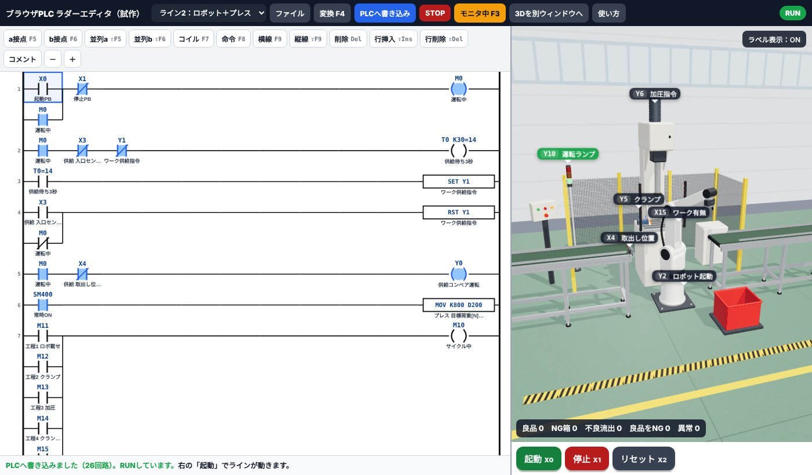
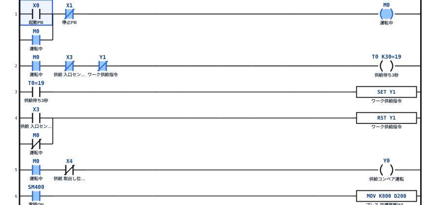
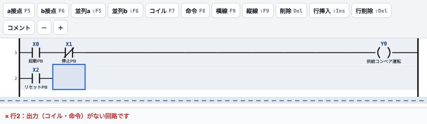
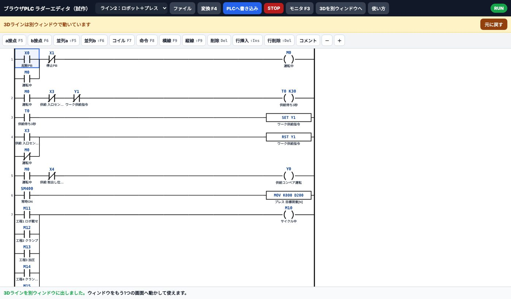
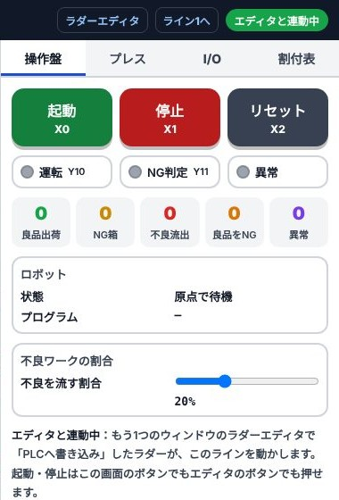
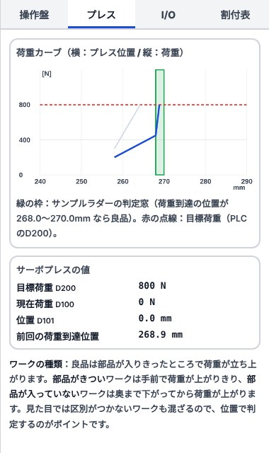

1画面の見かた
左がラダーエディタ、右が3Dラインです。上のボタンはGX Works3と同じ並び・同じキーで使えるようにしています。

PCで開いたときの画面（ライン2を表示中）。スマホでは横にスクロールできます
- ツールバーライン切替・ファイル・変換・書き込み・RUN/STOP・モニタ・別ウィンドウ・使い方。すぐ下で拡大して説明します。
- 部品パレットa接点・b接点・コイル・命令など。キーボードのF5〜F9でも置けます。
- ラダー図ここに回路を描きます。青い枠がカーソルです。
- 3Dラインドラッグで回転、ホイール（スマホは2本指）で拡大。黒いラベルがI/Oの番号です。
- 操作盤起動（X0）・停止（X1）・リセット（X2）の押しボタン。
- メッセージ欄次にやることや、エラーの場所が出ます。
ツールバー（拡大）
スマホでは横にスクロールできます
- ライン切替ライン1（押出し）とライン2（ロボット＋プレス）を選びます。
- ファイルサンプルを開く・新規・書き出し・読み込み。
- 変換（F4）描いたラダーにミスがないか確かめます。（変換＝絵のラダーを、PLCが実行できる形に直す作業）
- PLCへ書き込みラダーを内蔵PLCに送ります。ここで初めてラインに反映されます。
- STOP / RUN内蔵PLCを止めたり動かしたりします。
- モニタ（F3）ONの接点・コイルが青く光り、タイマの現在値も見えます。
- 3Dを別ウィンドウへ3Dラインを別ウィンドウに出します。2画面で使うとき用（6章）。claude.aiで開いたページには表示されません。
- 使い方このページを開きます。
- PLCの状態緑の「RUN」なら実行中。
画面が狭いので、上に「ラダー」「3Dライン」の切替タブが出ます。片方ずつ表示されます。
2まず動かしてみる（3ステップ）
ラダーを書き換えても、「PLCへ書き込み」を押すまでラインは前のラダーのまま動きます。本物のPLCと同じ考え方です。
3ラダーの書き方
置きたい場所をクリックして、キーを押すか、パレットのボタンを押します。入力欄にデバイス番号を打ってEnterで確定です。

X0・X1の右に「コイル」を置こうとしているところ
- 部品パレットボタンの右に書いてあるキーと同じ働きです。
- 入力欄ここに
Y0のように打ちます。小文字でもOK。下に入力例が出ます。
キー操作（GX Works3と同じ）
| キー | 置くもの | 入力の例 |
|---|---|---|
| F5 | a接点（ONで通る接点） | X0 |
| F6 | b接点（OFFで通る接点） | X1 |
| ⇧F5 | 並列a接点（上の行と並べる） | M0（自己保持など） |
| ⇧F6 | 並列b接点 | M0 |
| F7 | コイル・タイマ・カウンタ | Y0／T0 K30（3.0秒）／C0 K5 |
| F8 | 命令 | SET M0／MOV K800 D200／ZRST M11 M31 |
| F9 | 横線 | — |
| ⇧F9 | 縦線（カーソルの右下に引く） | — |
| Del | カーソル位置を消す | — |
| ⇧Ins／⇧Del | 行の挿入／行の削除 | — |
| F4 | 変換 | — |
| F3 | モニタ開始・終了 | — |
命令を直接打つ（リスト入力）
ラダーの上でそのまま文字を打ち始めると、入力欄が開きます。GX Works3の「命令で打つ」やり方がそのまま使えます。
| 打つ文字 | 結果 |
|---|---|
LD X0 | 行の頭にa接点 X0 |
ANI X1 | 直列にb接点 X1 |
OR M0 | 並列にa接点 M0 |
OUT Y0 | コイル Y0 |
LDP X0／LDF X0 | 立上り／立下りパルス接点 |
AND>= D101 K2680 | 比較接点（D101が2680以上で通る） |
使えるデバイスと命令
X・Y（8進数：X7の次はX10）、M、L、B、T（タイマ 100ms単位）、C（カウンタ）、D（数値）、K（定数）、SM400（常時ON）、SM401（常時OFF）、SM402（RUN後1回だけON）
OUT、SET、RST、PLS、PLF、MOV(P)、ZRST、INC(P)、DEC(P)、＋、－、比較（＝ <> > < >= <=）
4モニタで動きを見る
モニタ（F3）を押すと、ONになっている接点やコイルが青く塗られます。タイマは T0 K30=19 のように現在値が出ます（19＝1.9秒経過）。

起動後のモニタ。M0が自己保持され、T0がカウント中
「ラインが止まった」ときは、どの接点が青くならずに電気が止まっているかを探します。現場のトラブルシュートと同じ見方です。
5エラーが出たとき
「変換」や「PLCへ書き込み」でミスが見つかると、メッセージ欄に赤字で行番号と理由が出て、カーソルがその行へ飛びます。

2行目にコイルを置き忘れた例（途中を省略しています）
- エラーメッセージ「行2：出力（コイル・命令）がない回路です」
| メッセージ | 直し方 |
|---|---|
| 出力がない回路 | 行の右端にコイルか命令を置く |
| つながっていない | 途中に空きマスがある。横線（F9）でつなぐ |
| 左の母線に届かない | 並列の枝が左端まで来ていない。縦線（⇧F9）を確認 |
| 書込み先はDに | MOV・INC・＋などの最後はDを指定する |
62画面で使う（エディタと3Dを別ウィンドウに）
モニタが2枚ある人は、片方の画面にラダー、もう片方に3Dラインを大きく出せます。
※ ダウンロード版・公式サイト版の機能です（claude.aiで開いたページでは使えません）
自動で
連動
エディタ側の画面

- 3Dを別ウィンドウへ押すと3Dが別ウィンドウになり、エディタは横いっぱいに広がります。
- 黄色い帯「3Dラインは別ウィンドウで動いています」の表示。
- 元に戻す別ウィンドウを閉じて、1画面の表示に戻します。
3Dライン側の画面

別ウィンドウでは右側のパネルが付き、情報が多く出ます（右側を拡大↓）

- 「エディタと連動中」緑ならエディタとつながっています。
- 操作盤起動・停止・リセットはこちらでもエディタ側でも押せます。
- カウンタ良品出荷・NG箱・不良流出などの数。ラダーの出来を数字で確かめられます。
右側のタブで「プレス」（荷重カーブ）「I/O」（ON/OFF一覧）「割付表」も見られます。1画面のときより情報が多く出ます。
claude.aiのページの中では、別ウィンドウを開くことができません（claude.ai側で止められます）。そのため「3Dを別ウィンドウへ」ボタンは表示されません。2画面で使いたいときは、ダウンロード版（open_editor）か公式サイト版を使ってください。
ブラウザが「ポップアップをブロックしました」と止めている場合があります。アドレスバー右のアイコンからこのサイトのポップアップを許可して、もう一度押してください。それでも開かないときは、画面に出るURLを同じブラウザの別タブで開くと連動します。
エディタと3Dは同じブラウザ（例：どちらもChrome）で開いてください。ChromeとEdgeのように別のブラウザだと連動しません。
7ライン2の見どころ（ロボット＋サーボプレス）
ライン2は、供給 → ロボットでプレス台へ → クランプ → 加圧 → 判定 → ロボットで排出かNG箱へ、の流れです。サンプルラダーは26回路のステップ制御（工程ごとにMを1つずつ進める書き方）です。

「プレス」タブ。青線が今回の荷重カーブ
判定のしくみ
プレスは目標荷重（D200）に達したところで止まり、そのときの位置（D101）をPLCに返します。
サンプルラダーは、位置が268.0〜270.0mm（D101が2680〜2700）なら良品と判定しています。
カーブの先端が緑の枠に入れば良品。手前で荷重が立ち上がるのは部品がきつい、奥まで下がってから立ち上がるのは部品が入っていないワークです。
I/O割付（ライン2）
| デバイス | 内容 |
|---|---|
| X0 / X1 / X2 | 起動PB / 停止PB / リセットPB |
| X3 / X4 | 供給 入口センサー / 取出し位置センサー |
| X5 / X6 / X7 | ロボット 動作中 / 動作完了 / 原点 |
| X10 / X11 | クランプ 前進端 / 後退端 |
| X12 / X13 / X14 | プレス 上限 / 加圧完了 / 下限 |
| X15 | プレス台 ワーク有無 |
| D100 / D101 | プレス 現在荷重[N] / 位置[0.1mm] |
| Y0 / Y1 | 供給コンベア / ワーク供給指令 |
| Y2 / Y3・Y4 | ロボット起動 / プログラム番号（1＝供給→台、2＝台→排出、3＝台→NG箱） |
| Y5 / Y6 / Y7 | クランプSOL / プレス加圧指令 / 排出コンベア |
| Y10 / Y11 | 運転ランプ / NG判定ランプ |
| D200 | プレス 目標荷重[N] |
ライン1（押出し）の割付を見る
| デバイス | 内容 |
|---|---|
| X0 / X1 | 入口センサー / 押出位置センサー |
| X2 / X3 | シリンダ 後退端 / 前進端 |
| X4 / X5 | 起動PB / 停止PB |
| Y0 / Y1 | コンベア運転 / シリンダ前進SOL |
| Y2 / Y3 | ワーク供給指令 / 運転ランプ |
8練習問題：わざと変えてみる
サンプル（ライン2）を少し書き換えて「PLCへ書き込み」→「起動」。何が起きるか予想してから動かすと力がつきます。
① 自己保持を消す
1行目の並列M0 を消して書き込み。→ 起動ボタンを離すと止まるはずです。② 供給の待ち時間を変える
2行目のT0 K30 を T0 K10 に。→ ワークが1秒ごとに供給されます。③ 目標荷重を下げる
6行目のMOV K800 D200 を K600 に。→ プレスが手前で止まり、良品までNGになります。「プレス」タブで赤い点線が下がるのを確かめてください。④ 判定の窓を広げる
比較接点D101 >= K2680 を K2600 に。→ 部品がきついワークまで良品に流れて「不良流出」が増えます。判定条件の大切さがわかります。⑤ 自分で書く（ライン1）
ライン1を選んで「ファイル」→「新規」。起動・停止の自己保持とコンベア運転だけを自分で書いて、ワークが流れるところまで作ってみてください。「ファイル」→「サンプルを開く」でいつでも最初のラダーに戻せます。
9保存と共有
書いたラダーはこのブラウザに自動で保存されます。閉じても次に開けば残っています。
ブラウザの履歴やサイトデータを消すと、自動保存も消えます。大事なラダーは「書き出し」で控えておいてください。
10よくある質問
Q. 起動を押しても動きません
「PLCへ書き込み」を押したか、右上がRUNになっているかを確認してください。モニタ（F3）をONにすると、どこで止まっているか見えます。
Q. GX Works3で作ったラダーは読み込めますか？
直接は読み込めません。このエディタはGX Works3と同じ操作で書ける練習用です。考え方・命令・キー操作はそのまま本物に持っていけます。
Q. 本物のPLCやGX Simulator3につなげますか？
ダウンロード版（zip）に入っている中継ソフトを使うとつなげます。手順はzip内の README.txt を見てください。ブラウザ版だけでは外部のPLCにはつながりません。
Q. 3Dが重い・カクカクします
自動で画質を下げて調整します。それでも重いときは、右下の「ラベル表示」をOFFにするか、他のタブを閉じてください。
Q. スマホでも使えますか？
使えます。「ラダー」「3Dライン」のタブで切り替えます。ラダーを書くならPC（キーボード）がおすすめです。
Q. ラベルが邪魔です
3D画面右下の「ラベル表示：ON」を押すとOFFになります。